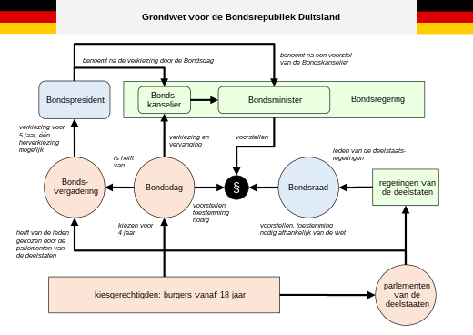

Duitsland
Duitsland (Duits: Deutschland), is een land in West- en of Centraal-Europa. Het heeft een grondgebied van 357.022 km² en grenst in het noorden aan de Oostzee, de Noordzee en Denemarken, in het oosten aan Polen en Tsjechië, in het zuiden aan Oostenrijk en Zwitserland en in het westen aan Frankrijk, Luxemburg, België en Nederland. Duitsland heeft met 83.222.442 inwoners (30 september 2021) de grootste bevolking van alle landen in de Europese Unie. De hoofdstad en grootste stad van het land is Berlijn.
Berlijn
Berlijn (Duits: Berlin) is de hoofdstad van Duitsland en als stadstaat een deelstaat van dat land. Met 3.866.385 inwoners (30 juni 2023) is Berlijn tevens de grootste stad van het land. Daarnaast is Berlijn - gerekend naar inwonertal binnen de stadsgrenzen - de grootste stad van de Europese Unie. De stad ligt in het noordoosten van Duitsland, aan de rivier de Spree. 22% van Berlijn bestaat uit natuur en parken en 6% uit meren, rivieren en kanalen. Ze wordt omsloten door de deelstaat Brandenburg.

Foto 1: Brandenburger Tor, stadspoort in Berlijn gebouwd rond 1790.
In zijn geschiedenis, die teruggaat tot de dertiende eeuw, was Berlijn de hoofdstad van Pruisen (1701–1918), het Duitse Keizerrijk (1871–1918), de Weimarrepubliek (1919–1933) en nazi-Duitsland (1933–1945). Na de Tweede Wereldoorlog was Berlijn gedurende meer dan veertig jaar een verdeelde stad, waarbij het oostelijke deel als hoofdstad fungeerde van de DDR en het westelijke deel een de facto exclave van West-Duitsland was. Na de Duitse hereniging in 1990 werd Berlijn de hoofdstad van de Bondsrepubliek Duitsland en de zetel van het parlement, de deelstaatvertegenwoordiging en het staatshoofd.
Politiek
De Bondsrepubliek Duitsland is met haar grondwet van 23 mei 1949 een democratisch-parlementaire bondsstaat. De grondwet kan door een tweederdemeerderheid in Bondsdag en bondsraad gewijzigd worden. Enkele artikelen, waarin de basisprincipes van de grondwet zoals de federale structuur van de staat, de democratische, sociale en rechtsprincipes van de staat, en de onschendbaarheid van de menselijke waarde van het individu, zijn van iedere wijziging uitgesloten.
Foto 2: Politieke systeem.
Het Duitse parlement heet Bondsdag (Deutscher Bundestag) en wordt normaliter elke vier jaar door de volwassen Duitsers gekozen. Het kiessysteem voor de Bondsdag baseert in principe op evenredige vertegenwoordiging maar heeft ook kenmerken van het meerderheidsstelsel. Een kiesdrempel van vijf procent zorgt ervoor dat heel kleine partijen buiten het parlement blijven. De Bondsdag vergadert in het historische gebouw van de Rijksdag in Berlijn. Er zijn minimaal 598 volksvertegenwoordigers, vanwege het kiessysteem zijn het meestal iets meer. De huidige Bondsdag, gekozen in 2021, telt 736 leden, de parlementsvoorzitter is de sociaaldemocrate Bärbel Bas. De Bondsdag is het machtigste orgaan in het politieke stelsel: het stemt over wetten, het kiest de regeringsleider (de bondskanselier), gedeeltelijk de bondspresident en de bondsrechters, het controleert de regering en de geheime diensten en het beslist over volkenrechtelijke verdragen en over de militaire inzet van het leger.